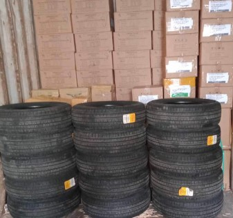
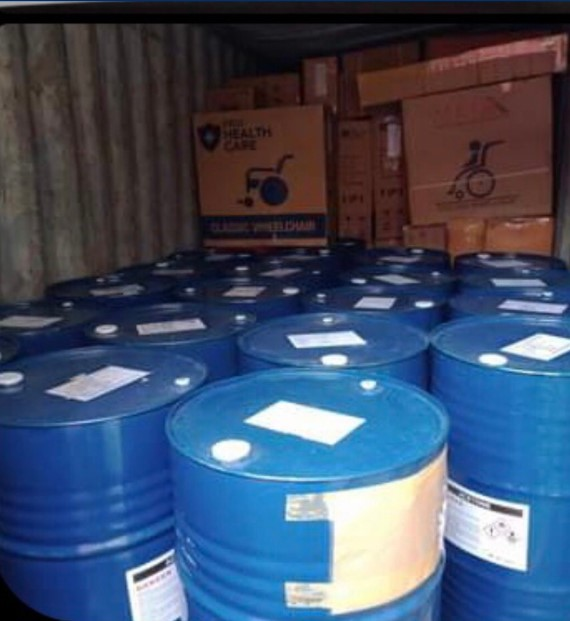
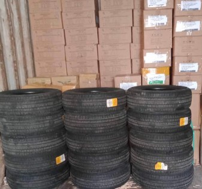
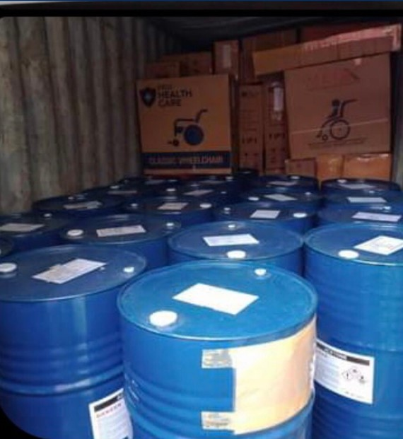

Services
You can count on YJS Transportation Service to not only meet, but exceed all your needs and requests.
Learn more about the services we provide below, and let us know if you’d like to learn more about a specific offering.
Loose Cargo
For customers looking to ship items that do not fill up one container, Loose Cargo Shipments are the way to go. From one box all the way to more than boxes, we can ship your goods to wherever you need them, depending on the customers choice of convenience or cost, you have the choice to drop it off at our designated yard locations or we can arrange to pick it up for you. Loose cargo shipments are charged by weight rate (by kilogram) or volule rate (by cubic meter), whichever is higher.
Full Container
A shipment type where a cargo occupies the full size of a container. At times the container may not be fully,If you require shipping for one whole container, we are able to provide you hassle free service of either pier to pier ,door to door, pier to door, door to pier whichever mode of service will be the most cost effective and convenient.
Rolling Cargo
RC or Rolling cargoes is embark on a maritime journey,In as much as it is now possible to drive cars and trucks mostly anywhere in the country today, We can assist in loading so as to make sure that your vehicles can be delivered to your clients in the pristine condition that they expect. It typically includes automobiles, trucks ,buses 5 Tons below.The transportation of your rolling cargo we assure proper securing ,lashing,and chocking to ensure stability and prevent shifting or damage throughout the journey or travel
General Cargo/Equipments/Oversized Cargo
We load general cargoes/equipments,this are equipments that has a wide range cargo. For when you need to ship specialized equipment like construction equipment, heavy machinery, and factory equipment, We can assist you for safe and efficient transportation of your cargoes.
Heavy Equipments
Any kind of heavy equipment is expertly secured ang transported by our shipping line partner with 5 tons above. Towering cranes, earth movers and industrial giants are carefully loaded onto cargo vessels. This maritime ballet ensures the safe and precise transit of these engineering marvels,as they embark to the voyage in supporting global imfrastracture and development projects from port to port,Bridging with might and efficiency. Special considerations are taken to secure, immobilize the steering mechanism,and properly distribute the weight and maintain balance of the cargo.
SHIPMENT GALLERY


 



About Us
All About YJS Transportation Service
YJS Transportation Serviceis a Cargo Forwarder that provides all the full and extensive services needed to ship your freight load efficiently and reliability with our Shipping Line Partner in our Industry. We negotiate with customers, handling cost, implementing and controlling procedures for the effective transportation of your cargo.
We specializes in arranging and coordinating shipments and transportation of goods on behalf of shipper. We serve as valuable partners for businesses seeking efficient and reliable transportation solutions for their goods, offering expertise in handling freight.We ensure quality and timely managing of all vour cargo all the time,thus we always guarantee and offering expertise that businesses needs to send and receive goods efficiently.
Please get in touch to learn more about our company or for details about the services we provide.
Contact Us
We welcome your inquiries. Get in touch with us for efficient and cost-effective services.
(02) 6368810
+63952143054